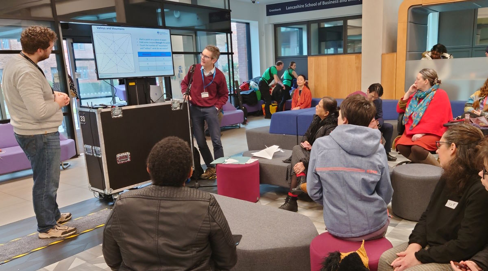
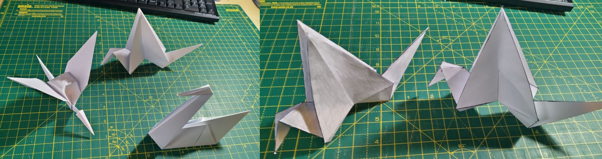
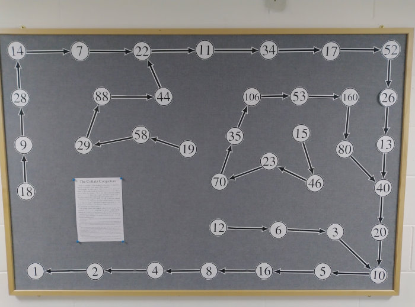
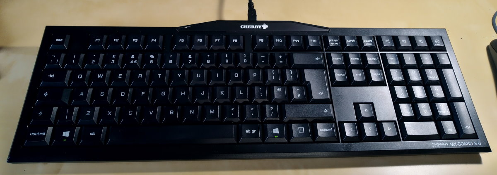

Blog of Matthew Daws
Mittag-Leffler
I spend last week at the Institute Mittag-Leffler in a suburb of Stockholm, attending the Noncommutative Harmonic Analysis and Quantum Information conference. The institute is lovely, being comprised of a large, old mansion, various accommodation blocks, a seminar building, all set in lovely grounds. The weather couldn't have been nicer (well, too hot for me, but I'd probably be happy spending the summer near the arctic circle). As the history page explains, the mansion belonged to Mittag-Leffler, and was left in his will to form a Mathematics research institute, but sadly the Great Depression eroded his legacy to the extent that the institute couldn't function as envisaged until the latter part of the 20th century, when additional funding was found. If you get the chance to visit, I highly recommend it.
The mansion also houses an amazing Mathematics library. I took a little photo:

Origami
I got roped into (okay, volunteered for) giving a talk at UClan's Japan Day on the theme of Origami. To quote Tom Lehrer, this I know from nothing. But one can learn, and I hope I said something interesting in my short talk.


Read More →Outside the office
There has, for more time than I care to think about, been a large, empty display board right outside my office. My fellow corridor occupants, being (astro)physicists, actually have a culture of making posters, which are then perfect for displaying on said boards. But what is a Mathematician to do? I have been planning this for, again, longer than I care to remember, but finally here it is:

The evenings spent watching Masterchef and cutting out bits of paper were, well, almost worth it. It occurs to me that the display of images on this site is not particularly "responsive", but who has the time?
The Collatz Conjecture is well-known, and fun to play around with (especially into an introduction to programming class). Some recent progress was Tao's work but this all is way outside my zone of expertise. Still, I think it does make for a nice use of a notice board.
Read More →Conferencing again, and how to spend time
Spending unexpected time in Poznan airport, after a cancelled flight. I have been at the Noncommutative harmonic analysis and quantum groups conference at Bedlewo palace, postponed at least once due to Covid, most recently from last year.
The conference was good, in the round. I have gotten out of the habit of travel, at least in part due to Covid, and had initially not planned to attend in person. I am trying to be more open to new experiences (to say yes to things a bit more, and perhaps say no to some other things). And, cancelled flight not withstanding, travelling in person was a good thing. I got to catch up with some people I knew already, and a chance to meet some new people. The talks were good. Even the conference outing, kayaking on the river- another chance to say yes to something I would not normally do so- was different, fun, if frustratingly hard to do well.
Read More →LaTeX editing and typing
Continuing the theme of the previous post, this time concerning latex on the desktop. But first, typing. A confession: I am a "hybrid" typist. Or, let us be optimistic, and say was a hybrid typist. I know where all the keys are, but I used to use mainly my index fingers, sometimes the middle fingers. On a old IBM keyboard, or whatever horror one of my laptops, or work, has provided for me. I had deluded myself that this was sufficient, but from observing people who can type properly, finally decided it was not.
I have also unpacked and started using this:

Read More →An update
An update of sorts. I have finally submitted my long paper "Quantum graphs: different perspectives, homomorphisms and quantum automorphisms".
We have been teaching back in person all year, and really, long may this continue. Given the sort of teaching I do, to the sort of students I teach, in person lectures seem much, much better from a continuing engagement point of view. This year I modified my first year tutorials, making them fully "flipped" and completely de-coupled from any homework. I think this worked well: students seemed more willing to experiment and collaborate when there is no "assessment" (formative or otherwise). Next we need to work on encouraging out of class work.
I wrote before about virtual seminars. I have continued to find travel difficult for a variety of reasons. As such, I have really enjoyed being able to attend various virtual seminars; let me mention the Athens Functional Analysis and Operator Algebra seminar, and the (virtual) Quantum Groups Seminar. It is hard to think that pre-pandemic, I essentially attended no seminars at all. Long may virtual things continue!
Read More →Back to in-person seminars
Currently IWOTA2020 is running, a year late and on Zoom. Many of the talks I have attended have been really interesting, but I am not convinced that a big conference like this works well over Zoom. For me, much of the point of large conferences is that I find myself in unusually parallel sessions, learning about things I haven't seen before. I can catch up with old friends and acquaintances, or make new ones, over the coffee breaks. What I've noticed here, and at other large meetings, is that attendance at the parallel sessions often seems rather small. I guess the motivation to go to something a bit random "out of interest" (but maybe, really, because the coffee has run out, and there is not much else to do) doesn't work when video-conferencing.
Anyway, on Monday, I gave an in-person talk at a satellite session, in a small meeting in honour of Garth Dales's retirement. It was slightly weird to be talking in person again. What I more noticed was how much I enjoyed listening to (the other) talks in person. It's so much easier to concentrate, and make good notes, when I'm sat there in person in lecture room. Both Niels and Jared gave nice talks, but it cannot just be down to their skill as speakers that I found the whole event so much more rewarding than Zooming.
Read More →Sideways
Another, more frivolous, listen has been Matthew Syed's excellent Radio 4 series Sideways. In particular, Episode 6 made me think of academia. (But all episodes are well worth a listen, IMHO)
In this episode, "A Recipe for Happiness", in the 2nd half, Syed talks about the experiment at Zappos with Holacracy, a rather flat management style (but listen to the episode to really understand what is meant).
Read More →